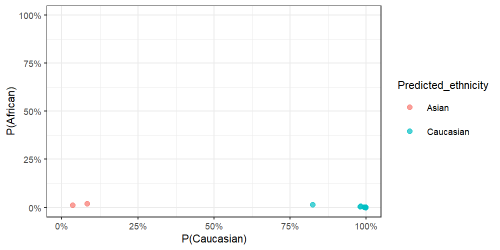
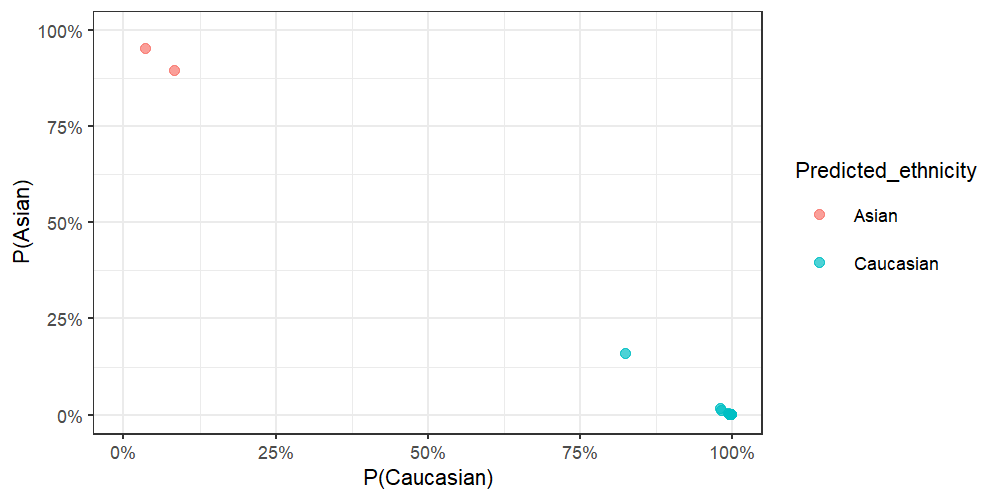
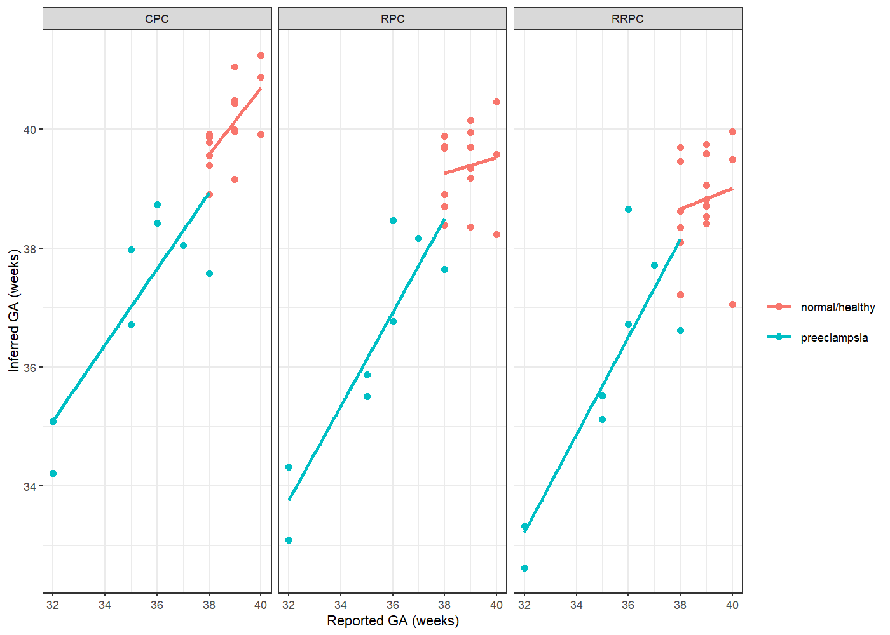
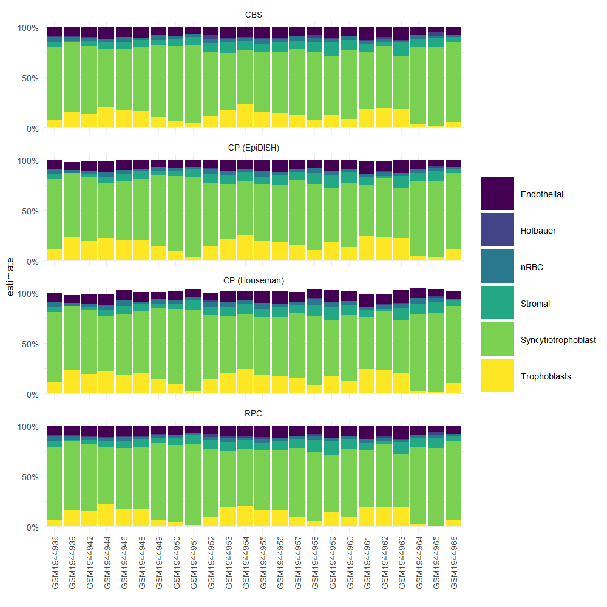

planet is an R package for inferring ethnicity, gestational age, and cell composition from placental DNA methylation data 123. See full documentation at https://wvictor14.github.io/planet/
Installation
You can install from this github repo with:
devtools::install_github('wvictor14/planet')Usage
Example Data
For demonstration, I use 24 samples from a placental DNAm dataset from GEO (GSE7519) 4, which contains samples collected in an Australian population. The DNA methylation data (in betas) can be accessed with data(pl_betas) and corresponding sample information from data(pl_pDat). Note that cpgs have been filtered to a random ~10,000 CpGs, plus the CpGs used in all of the models from this package.
library(planet)
library(tidyverse)
theme_set(theme_bw(base_size = 8))
#load example data
data(pl_betas)
data(pl_pDat)
dim(pl_betas)
#> [1] 13918 24
head(pl_pDat)| sample_id | sex | disease | gestation_wk |
|---|---|---|---|
| GSM1944936 | Male | preeclampsia | 36 |
| GSM1944939 | Male | preeclampsia | 32 |
| GSM1944942 | Female | preeclampsia | 32 |
| GSM1944944 | Male | preeclampsia | 35 |
| GSM1944946 | Female | preeclampsia | 38 |
| GSM1944948 | Female | preeclampsia | 36 |
Infer Ethnicity
Requirements:
- CpGs and SNPs that are used in
pl_infer_ethnicityneed to be in your betasdata.frame. You can ensure that you have all features with thepl_ethnicity_featuresvector:
Note that if some features are missing, pl_infer_ethnicity will throw a warning, but will still work.
- The betas
data.frameneeds to have samples in columns and CpGs/snps in rows. The rownames must be CpG/rs identifiers. - If you have IDAT files available, then I recommend normalizing your betas
data.frameusing the same normalization methods used on the training data: noob 5 and BMIQ 6. To apply these, runminfi::preprocessNoob()on anrgsetobject and thenwateRmelon::BMIQ(). This has already applied to the example data.
results <- pl_infer_ethnicity(pl_betas)
#> [1] "1860 of 1860 predictors present."
# show last 8 rows
results %>%
tail(8)| Sample_ID | Predicted_ethnicity_nothresh | Predicted_ethnicity | Prob_African | Prob_Asian | Prob_Caucasian | Highest_Prob |
|---|---|---|---|---|---|---|
| GSM1944959 | Asian | Asian | 0.0123073 | 0.9523544 | 0.0353383 | 0.9523544 |
| GSM1944960 | Caucasian | Caucasian | 0.0156961 | 0.1595213 | 0.8247827 | 0.8247827 |
| GSM1944961 | Asian | Asian | 0.0208421 | 0.8954518 | 0.0837061 | 0.8954518 |
| GSM1944962 | Caucasian | Caucasian | 0.0009276 | 0.0008801 | 0.9981923 | 0.9981923 |
| GSM1944963 | Caucasian | Caucasian | 0.0022635 | 0.0028007 | 0.9949358 | 0.9949358 |
| GSM1944964 | Caucasian | Caucasian | 0.0065973 | 0.0112013 | 0.9822014 | 0.9822014 |
| GSM1944965 | Caucasian | Caucasian | 0.0021578 | 0.0024196 | 0.9954226 | 0.9954226 |
| GSM1944966 | Caucasian | Caucasian | 0.0011397 | 0.0017651 | 0.9970952 | 0.9970952 |
pl_infer_ethnicity returns probabilities corresponding to each ethnicity for each sample (e.g Prob_Caucasian, Prob_African, Prob_Asian). A final classification is determined in two ways:
Predicted_ethnicity_nothresh- returns a classification corresponding to the highest class-specific probability.Predicted_ethnicity- if the highest class-specific probability is below0.75, then the the sample is assigned anAmibiguouslabel. This threshold can be adjusted with thethresholdargument. Samples with this label might require special attention in downstream analyses.
results %>%
ggplot(aes(x = Prob_Caucasian, y = Prob_African, col = Predicted_ethnicity)) +
geom_point(alpha = 0.7) +
coord_cartesian(xlim = c(0, 1), ylim = c(0, 1)) +
scale_x_continuous(labels = scales::percent) +
scale_y_continuous(labels = scales::percent) +
labs(x = 'P(Caucasian)', y = 'P(African)')
results %>%
ggplot(aes(x = Prob_Caucasian, y = Prob_Asian, col = Predicted_ethnicity)) +
geom_point(alpha = 0.7) +
coord_cartesian(xlim = c(0, 1), ylim = c(0, 1)) +
scale_x_continuous(labels = scales::percent) +
scale_y_continuous(labels = scales::percent) +
labs(x = 'P(Caucasian)', y = 'P(Asian)')
We can’t compare this to self-reported ethnicity as it is unavailable. But we know these samples were collected in Sydney, Australia, and are therefore likely mostly European with some East Asian ancestries.
table(results$Predicted_ethnicity)
#>
#> Asian Caucasian
#> 2 22A note on adjustment in differential methylation analysis
Because ‘Ambiguous’ samples might have different mixtures of ancestries, it might be inadequate to adjust for them as one group in an analysis of admixed populations (e.g. 50/50 Asian/African should not be considered the same group as 50/50 Caucasian/African). One solution would be to simply remove these samples. Another would be to adjust for the raw probabilities-in this case, use only two of the three probabilities, since the third will be redundant (probabilities sum to 1). If sample numbers are large enough in each group, stratifying downstream analyses by ethnicity might also be a valid option.
Infer Gestational Age
There are 3 gestational age clocks for placental DNA methylation data from Lee Y. et al. 2019 2:
- Robust Placental Clock (RPC)
- Control Placental Clock (CPC)
- Refined Robust Placental Clock (RRPC)
To use each, we can specify the type argument in pl_infer_age:
# We will add this information the sample information data.frame, pl_pDat
pl_pDat %>%
mutate(ga_RPC = pl_infer_age(pl_betas, type = 'RPC'),
ga_CPC = pl_infer_age(pl_betas, type = 'CPC'),
ga_RRPC = pl_infer_age(pl_betas, type = 'RRPC')) %>%
# reshape, to plot
pivot_longer(cols = contains('ga'),
names_to = 'clock_type',
names_prefix = 'ga_',
values_to = 'ga') %>%
ggplot(aes(x = gestation_wk, y = ga, col = disease)) +
geom_point() +
geom_smooth(method = 'lm', se = FALSE) +
facet_wrap(~clock_type) +
labs(x = 'Reported GA (weeks)', y = 'Inferred GA (weeks)', col = '')
#> [1] "558 of 558 predictors present."
#> [1] "546 of 546 predictors present."
#> [1] "395 of 395 predictors present."
#> `geom_smooth()` using formula 'y ~ x'
GA: gestational age
Infer Cell Composition
To infer cell composition on placental villi DNAm samples, we can use the reference cpgs identified in 3. These are provided in this package as pl_cell_cpgs_third and pl_cell_cpgs_first for third trimester (term) and first trimester samples, respectively.
In this example we are using term villi DNAm data, so we first load the reference cpgs pl_cell_cpgs_third. This is a data frame of 600 cpgs, with mean methylation levels for each cell type.
data('pl_cell_cpgs_third')
head(pl_cell_cpgs_third)
#> Trophoblasts Stromal Hofbauer Endothelial nRBC
#> cg10590657 0.1014098 0.9345796 0.8655285 0.8963641 0.8448382
#> cg14923398 0.1282030 0.8902107 0.9036769 0.9383641 0.9508709
#> cg05348366 0.1305697 0.9519820 0.8803082 0.9065136 0.9278057
#> cg17907628 0.1215249 0.9278777 0.8727841 0.8914412 0.9143601
#> cg26799656 0.1259953 0.9482014 0.8803863 0.8791004 0.9010419
#> cg11862144 0.1561991 0.9430855 0.9114967 0.9341671 0.9647331
#> Syncytiotrophoblast
#> cg10590657 0.05460441
#> cg14923398 0.05383193
#> cg05348366 0.06546727
#> cg17907628 0.05325227
#> cg26799656 0.06823985
#> cg11862144 0.06044207After our reference cpg data is loaded, we can estimate cell composition by applying either the Constrained Projection approach implemented by the R packages minfi or EpiDISH, or a non-constrained approach by EpiDish.
Minfi
library(minfi)
houseman_estimates <- minfi:::projectCellType(
pl_betas[rownames(pl_cell_cpgs_third),],
pl_cell_cpgs_third,
lessThanOne = FALSE)
head(houseman_estimates)
#> Trophoblasts Stromal Hofbauer Endothelial nRBC
#> GSM1944936 0.1091279 0.04891919 0.000000e+00 0.08983998 0.05294062
#> GSM1944939 0.2299918 0.00000000 -1.806592e-19 0.07888007 0.03374149
#> GSM1944942 0.1934287 0.03483540 0.000000e+00 0.09260353 0.02929310
#> GSM1944944 0.2239896 0.06249135 1.608645e-03 0.11040693 0.04447951
#> GSM1944946 0.1894152 0.07935955 0.000000e+00 0.10587439 0.05407587
#> GSM1944948 0.2045124 0.07657717 0.000000e+00 0.09871149 0.02269798
#> Syncytiotrophoblast
#> GSM1944936 0.6979477
#> GSM1944939 0.6377822
#> GSM1944942 0.6350506
#> GSM1944944 0.5467642
#> GSM1944946 0.6022329
#> GSM1944948 0.6085825EpiDish
library(EpiDISH)
#> Warning: package 'EpiDISH' was built under R version 4.0.3
# robust partial correlations
epidish_RPC <- epidish(
beta.m = pl_betas[rownames(pl_cell_cpgs_third),],
ref.m = pl_cell_cpgs_third,
method = 'RPC')
# CIBERSORT
epidish_CBS <- epidish(
beta.m = pl_betas[rownames(pl_cell_cpgs_third),],
ref.m = pl_cell_cpgs_third,
method = 'CBS')
# constrained projection (houseman 2012)
epidish_CP <- epidish(
beta.m = pl_betas[rownames(pl_cell_cpgs_third),],
ref.m = pl_cell_cpgs_third,
method = 'CP')Compare
We can compare the different cell composition estimates.
library(viridis)
#> Loading required package: viridisLite
bind_rows(houseman_estimates %>% as.data.frame %>% mutate(algorithm = 'CP (Houseman)'),
epidish_RPC$estF %>% as.data.frame %>% mutate(algorithm = 'RPC'),
epidish_CBS$estF %>% as.data.frame %>% mutate(algorithm = 'CBS'),
epidish_CP$estF %>% as.data.frame %>% mutate(algorithm = 'CP (EpiDISH)')) %>%
mutate(sample = rep(rownames(houseman_estimates),4)) %>%
as_tibble() %>%
pivot_longer(cols = -c(algorithm, sample),
names_to = 'component',
values_to = 'estimate') %>%
ggplot(aes(x = sample, y = estimate, fill = component)) +
geom_bar(stat = 'identity') +
facet_wrap(~algorithm, ncol = 1) +
scale_fill_viridis_d() +
theme_minimal(base_size = 5) +
scale_y_continuous(limits = c(-0.1,1.1), breaks = c(0, 0.5, 1), labels = scales::percent) +
theme(axis.text.x = element_text(angle = 90, vjust = 0.5)) +
coord_cartesian(ylim = c(0,1)) +
labs(x = '', fill = '')
References {#references}
Yeung KR, Chiu CL, Pidsley R, Makris A, Hennessy A, Lind JM: DNA methylation profiles in preeclampsia and healthy control placentas. Am J Physiol Circ Physiol 2016, 310:H1295–H1303.
Triche TJ, Weisenberger DJ, Van Den Berg D, Laird PW, Siegmund KD, Siegmund KD: Low-level processing of Illumina Infinium DNA Methylation BeadArrays. Nucleic Acids Res 2013, 41:e90.
Teschendorff AE, Marabita F, Lechner M, Bartlett T, Tegner J, Gomez-Cabrero D, Beck S: A beta-mixture quantile normalization method for correcting probe design bias in Illumina Infinium 450 k DNA methylation data. Bioinformatics 2013, 29:189–96.